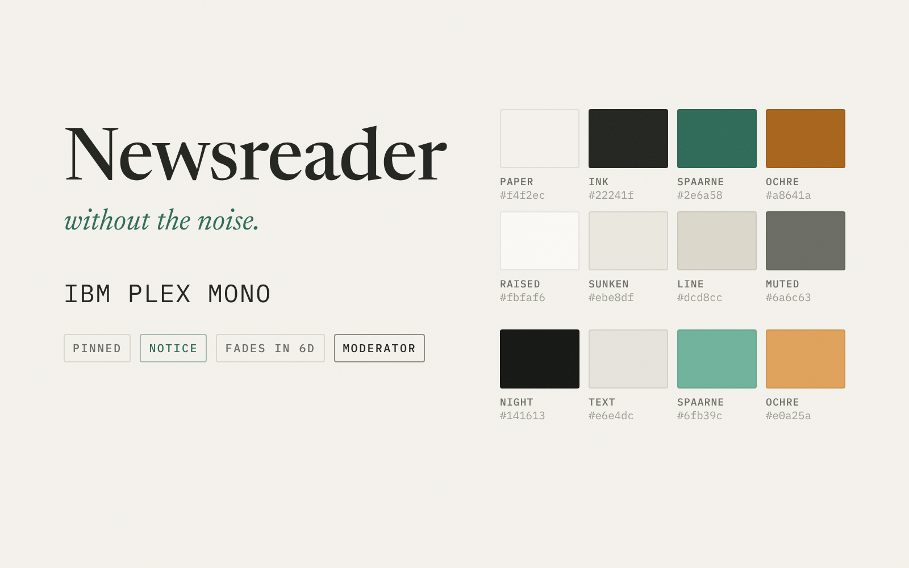
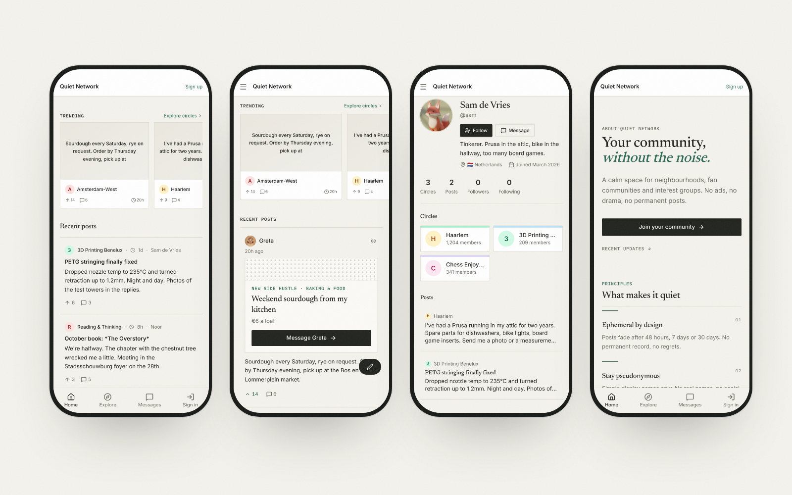
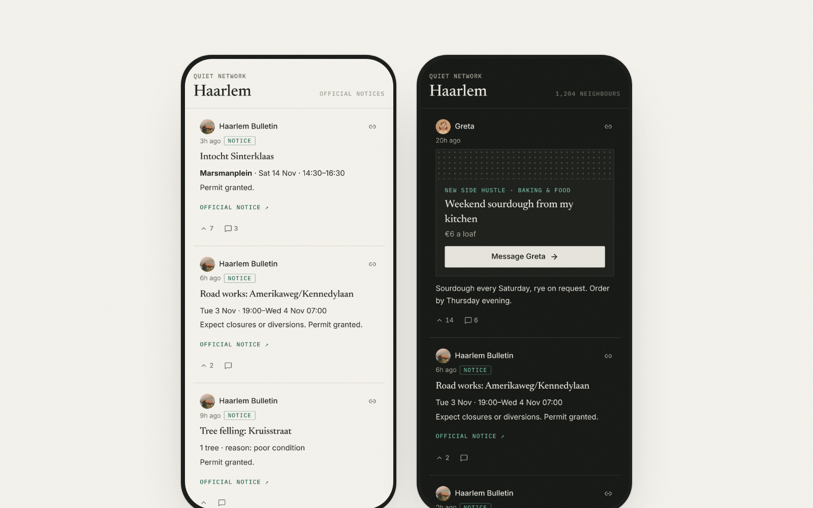
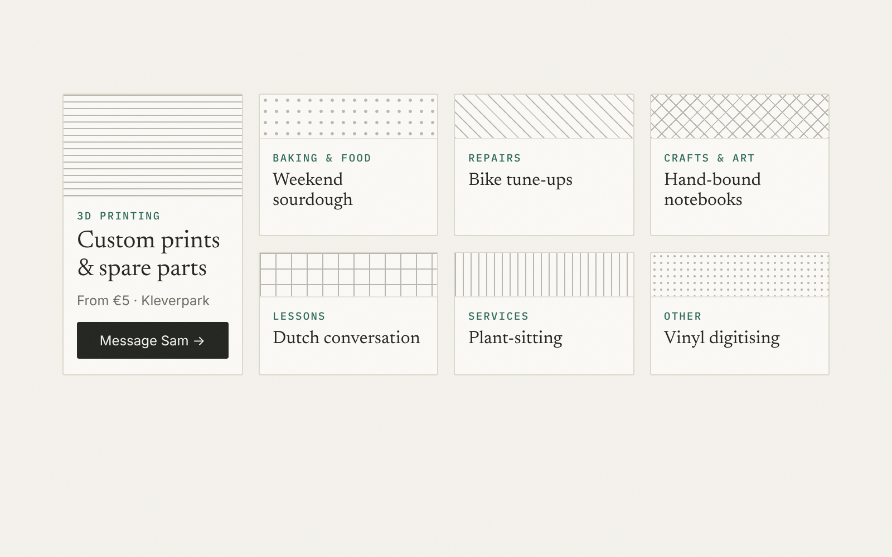

01Why I'm building it
Local connection, then log off
Most social platforms make money from attention, so they reward outrage and keep everything you say forever. I wanted to test the opposite: a place to ask your neighbours about a good bike shop, or talk about a hobby, without building a personal brand around it.
Quiet Network is organised in circles (a neighbourhood, a chess club, a reading group), uses pseudonyms, has no follower counts, and lets posts fade after a while. It's hosted in the EU, with no ads and no tracking.
“Calm by design isn't a tagline. It's the constraint every decision gets tested against.” The principle behind the product
02Design direction
Features weren't the problem. It looked like a template.
After the first build, everything worked but nothing felt like Quiet Network. I compared it with a friend's private photo app that commits to one idea in every detail, and rebuilt the visual system around calm.
-
Roles, not colours
Design tokens named for what they do (paper, ink, line, accent) instead of raw palette classes, so one change restyles the whole app and dark mode comes almost free.
-
Two voices
An editorial serif for things people say, a monospace for things the system labels: time, roles, sources.
-
Hairlines, not boxes
One 2px radius, no shadows, and a ruled feed instead of stacked cards. One accent colour, used sparingly.


03Product decisions
Four calls, and why
Real data over fake neighbours
An empty feed, padded with AI-written posts that read like a tourist guide and sometimes invented places.
A clearly labelled bulletin posts real municipal notices (events, road works, tree felling), street level only, and each one fades when the event is over.
Questioning my own concept
Every post showed a countdown. Fading was the pitch, but the clock added pressure.
Posts still fade, but only the author sees when. Time is shown only where it means something, like an event's date.
A reason to post
Nothing gave people a reason to post first.
Side-hustle announcements, like a “new job” post for what you make at home, each with its own texture and a direct message button.
Open by default
Comparable apps close everything to control hosting costs.
Public, read-only pages stay open as the growth bet. Text is cheap to host; cost is a problem worth having later.


04What I've learned
Lessons from being the whole team
-
Direction first
Weeks of features built on defaults changed the product less than a week spent on a clear visual direction.
-
Content is the product
For a community app the real risk is an empty room, not a missing feature. Solve cold start with real, trustworthy content before thinking about growth.
-
Kill your darlings
The countdown was part of my original pitch. Taking it away from readers made the product calmer without losing the idea behind it.
-
Directing AI
I build with Claude Code as an engineering partner. I set direction and acceptance criteria, and I check every screen myself before anything ships.
Next: a small pilot in Haarlem, and a map of what's happening nearby. Until there are real users, Quiet Network stays what it is: a place to practise building a product end to end.